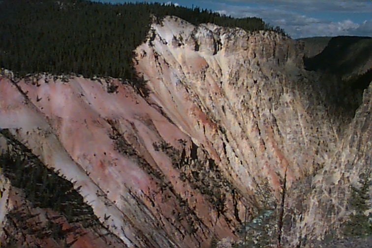
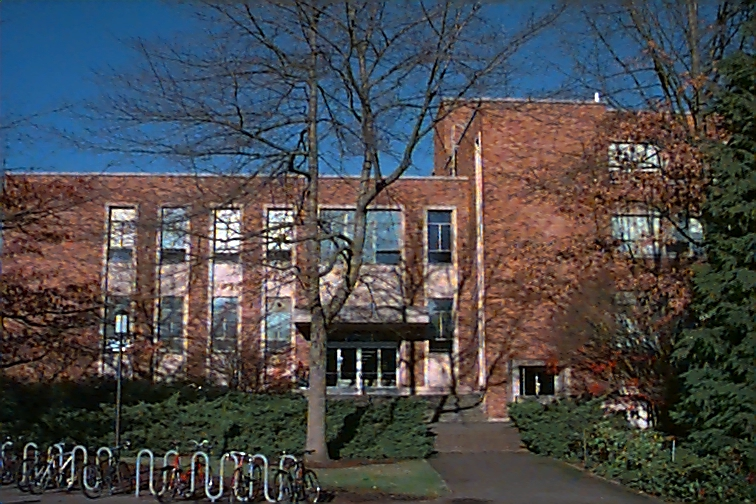
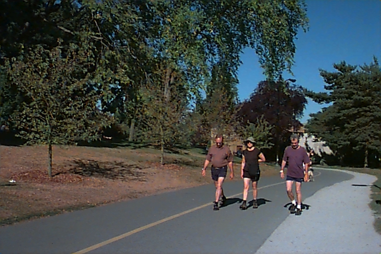
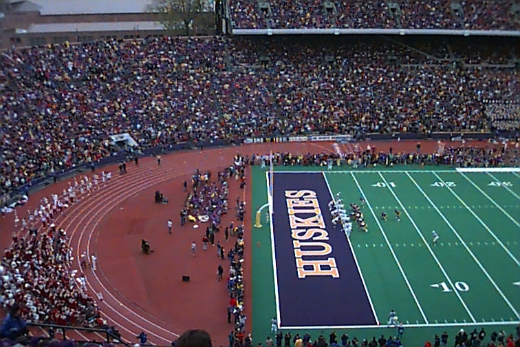
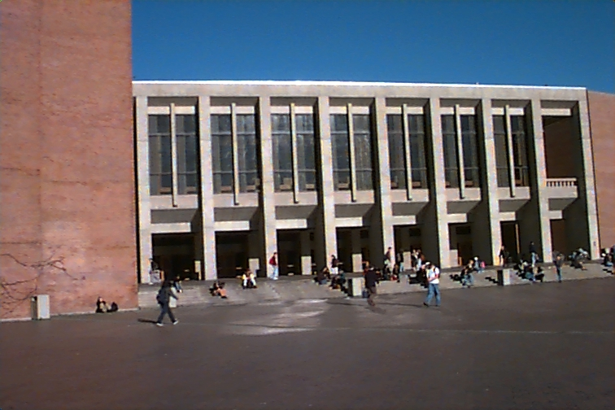

image id: 179 distance: 0.0
image id: 757 distance: 65273.313199193435
image id: 135 distance: 69350.27479397612
image id: 162 distance: 74567.54656014907
image id: 179 distance: 0.0
image id: 757 distance: 0.3242026748971193
image id: 176 distance: 0.36396657428403456
image id: 178 distance: 0.381083606282019
image id: 179 distance: 0.0
image id: 162 distance: 31773.150152988153
image id: 375 distance: 37333.67688418189
image id: 313 distance: 38347.148006734904
image id: 179 distance: 0.0
image id: 146 distance: 64169.2444867477
image id: 145 distance: 65088.67618871965
image id: 178 distance: 75478.98935465419
image id: 179 distance: 0.0
image id: 178 distance: 0.30406746031746035
image id: 145 distance: 0.35855221718316954
image id: 146 distance: 0.35859945830183926
image id: 179 distance: 0.0
image id: 757 distance: 282388.0
image id: 176 distance: 300932.0
image id: 135 distance: 313826.0